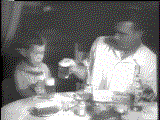

You’re invited! is an interactive dining experience in which “diners” enter an intimate dining pod to experience one of three simulated “meal” experiences.
The project is designed to provide guests with the same positive feelings they may experience in a comfortable dining setting with friends and family. However, the experience is clearly fabricated and solitary, leading to the unease of the uncanny valley. It comments on the social and dining rituals of our fast-paced society and where it may be headed in its current trajectory.

The makers of You’re invited! ask guests to put down their electronic distraction devices and to examine their own value of eating a meal of real food with real people.
Project by Daria Taback, Alicia Decker, and George Slavik